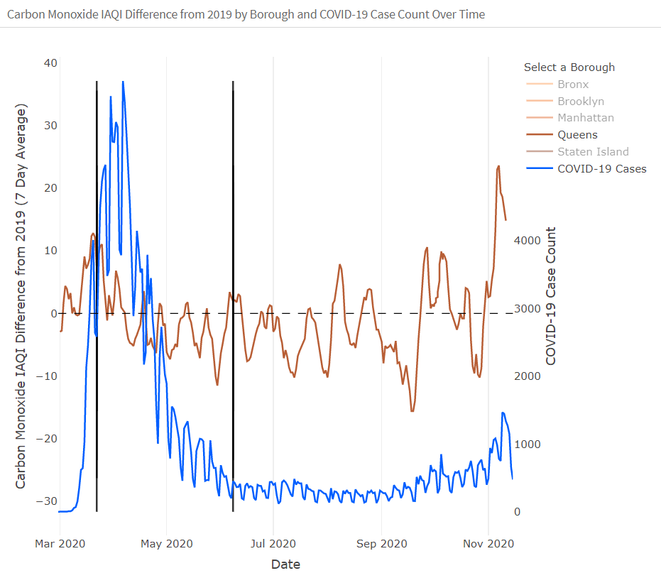

Report
Group Members with Names and UNIs
Fiona Ehrich, fde2103
Emil Hafeez, eh2928
Rachel Heise, rsh2155
Anmol Singh, as6183
About
The COVID-19 pandemic has quickly unbalanced the lives of many New Yorkers, with dramatic impacts on daily social and economic habits as part of a collective effort to reduce infection rates. In response to these large-scale systemic changes, there has been reporting that various cities around the world saw an improvement in air quality as COVID-19 lockdowns went into place [1]. It is intuitive that as city-wide activity decreases in response to COVID-19 prevention efforts, overall improvements in air quality may be visible [2]; however, to what extent are air quality improvements seen only in specific locations? Are poor air quality and COVID-19 health burdens disproportionately set against some residents and not others?
Surely the effects of COVID-19 and associated economic changes are not equal across different geographic and demographic groups, given different social, consumption, and production patterns across regions and persons. These patterns are rooted deeply in our city’s history.
Project Motivation
Evidence suggests that, much like in many parts of the USA, the lion’s share of environmental hazard exposures in NYC has fallen on disproportionately working class and non-white communities [3]. Now, as COVID-19 has brought massive changes to NYC, we see that the lion’s share of COVID-19 exposure has also fallen disproportionately on working class and non-white individuals [4]. As a matter of environmental justice, this is in the core interest of public health to investigate and repair.
Indeed, we may intuitively expect air quality to improve in high-density income centers like midtown Manhattan as COVID-19 shut down economic and social activity (and this trend has been highlighted in the city’s literature [5]). Is this also the case for parts of the city disproportionately set with the infrastructure and labor force to support that type of economic density?
Initial Questions
Our initial questions involved exploring the global trend of air quality in New York City with respect to COVID-19 case count, and then exploring borough-specific air quality with borough-specific COVID-19 case count. To what extent are COVID-19 and air quality patterns visibly correlated? To what extent are we able to parse out city-wide and borough-specific patterns in air quality trends in 2020, and COVID-19 cases?
Over time these questions evolved, as our group became more familiar with air quality specific metrics and indices, as well as their seasonality and variability. What constitutes a useful exposure metric at the city and at the borough level? To what extent are the air quality changes seasonal, and how might we adjust for seasonal trends to better investigate the influence of COVID-19? What is the time delay in air quality responses to policy changes, and to what extent does this delay differ from the COVID-19 infection rate changes?
Indeed, we have also needed to adapt to available information; for example, initially we examined using anonymized mobility data provided by Google as a proximal variable to people’s economic and social activity. However, this data began to obscure rather than clarify our investigation, due to the complications of a third data type and the accompanying visual density. Additionally, while utilizing COVID-19 case rates and air quality changes at a more granular level (like per neighborhood or zip code) would provide additional insight, this level of detail was not explored in this preliminary analysis.
Data
Air Quality Data
The Worldwide Air Quality (WAQI) Open Data platform is an increasingly popular source for air quality data covering 380 major cities around the world. The WAQI sources New York-specific data from the New York State Department of Environmental Conservation (NYSDEC). The raw dataset provides daily measurements of air pollutants, including ozone, Particulate Matter 2.5 (PM2.5), carbon monoxide, and nitrogen dioxide. While this project focused specifically on NYC, future projects could utilize this geographically broad dataset to compare air quality around the world.
Key steps included:
Filtering the dataset for NYC data and pollutants relevant for subsequent air quality calculations
Recoding some presumably incorrectly entered values and removing stray entries from 2018 (which were in the 2019 dataset)
Mutating missing values to 0 as the overall AQI calculation in the next step takes the maximum value of all the pollutants’ individual AQI values
Tidying pollutant data and writing functions using this pollutant data to calculate the AQI (EPA-standard) per day per borough in NYC
Using the resulting AQI values to create a variable for corresponding qualitative category for air quality per day per borough in NYC (“Good”, “Moderate”, “Unhealthy for Sensitive Populations”, or “Unhealthy”)
Merging data from 2019 and 2020, which were retrieved as separate files, into one data frame (the 2019 data itself was retrieved in four, by-quarter files)
Calculating the difference between 2020 AQI and 2019 AQI as well as the rolling 7-day averages of these differences
Calculating the difference between the 2020 carbon monoxide index and the 2019 carbon monoxide index as well as the rolling 7-day averages of these differences
COVID-19 Data
The New York City Department of Health and Mental Hygiene GitHub is a free and open data source which contains cumulative and per-borough new daily COVID-19 cases as recorded by the city. This analysis utilizes time series data available within the trends folder, here. The standardized reporting system allows for routine information to be transmitted to the NYC DoH. Trend data utilizes the date of event rather than the date of report, and location refers to the geography of residence and not geography of testing/treatment.
Key steps included:
Tidying the data, including renaming variables
Pivoting the data to provide case data per day per borough as well as cumulative totals per borough and city-wide
Combining the Two Datasets
After the air quality and COVID-19 datasets were individually cleaned, these two datasets were merged (by date and borough) into one “master” dataset to allow ease of use for the subsequent visualizations. Tweaks were made to the individual datasets in order to facilitate a successful merge. For example, one dataset had coded the Bronx as “The Bronx” and the other dataset had coded the Bronx as “Bronx”. Coding was made consistent (“Bronx”) to allow for integration of the data.
Exploratory Analysis
While our ultimate aim was to generate an interactive dashboard, we began by generating initial, static visualizations using ggplot. Over the course of these initial visualizations, we made a number of modifications to the preliminary plans we had sketched out. As these modifications were made, we went back to our dataset to derive additional metrics as needed.
Below are some of the key shifts that were made during this process:
We originally planned to present static ggplots for the time series plots and use Shiny to allow the user to make certain variable selections; however, we ultimately decided that using Plotly would allow for a better level of interactivity for the user.
We originally plotted only AQI data from 2020. However, trends weren’t apparent based on 2020 data alone without controlling for seasonal trends. In order to control for seasonal trends and incorporate a benchmark, we decided to plot the difference in AQI between 2020 and 2019.
We originally plotted the raw AQI metrics per day. In order to improve the legibility of the plots and help the user identify trends, we decided to calculate the 7-day rolling average of our AQI metrics.
We originally plotted COVID-19 case counts per borough. However, we decided that this appeared too busy and would hinder the user’s ability to make interpretations. We chose to focus on by-borough AQI metrics and keep the COVID-19 case count city-wide.
As we developed our two time series plots, we took steps to coordinate them visually. For example, COVID-19 case count is plotted in blue in both plots, and AQI metrics are plotted in similar but still distinct colors (yellow vs. oranges).
As we developed the map, we decided to add a tooltip providing more detail on the daily AQI and carbon monoxide level when hovering over a given borough.
Process-wise, some adjustments had to be made to our original flexdashboard in order to allow for the integration of Shiny, which was used for the date selection interactivity for the map. We also discovered we needed to make some adjustments (for example, adding an underscore to the beginning of the filename of the dashboard.Rmd) to prevent the dashboard from interfering with the website build process.
For more detail on our process, including some of the preliminary visualizations we generated, visit our process page!
Our final product is structured within a flexdashboard (using R Markdown). The time series plots utilize Plotly, and the map utilizes Leaflet and Shiny (for date selection interactivity). The dashboard is published to the Shiny server.
Additional Analysis
Our project scope did not include statistical analyses, but rather the exploration of the data which could lead to more formal research questions and methods in the future.
Discussion
After performing this analysis, we are struck by how responsive air quality is to social and economic trends. There is a clear difference between the air quality index during the lockdown and after Phase 1 reopening, indicating residential and/or commercial behavior shift. In fact, air quality is consistently improved from March through late July of 2020, compared to 2019.

AQI level and NYC COVID cases in 2020
AQI climbs to a 2019 level about a week after Phase 1 reopening begins, which is interesting for a few reasons. This may indicate that it took several days after Phase 1 began for people and businesses to return to their prior activity levels, or it may indicate that air quality (and/or its measurement and reporting) tends to lag behind changes in activity.
It is also interesting to note that carbon monoxide (CO) AQI does not have as clear of a response to the reduction in human activity. In fact, in certain boroughs such as Brooklyn and Queens, there is not much evidence that the lockdown reduced CO levels. Brooklyn CO level is remarkably unaffected by lockdown and reopening shifts, though demonstrates high variability in CO compared to other boroughs.

Brooklyn CO IAQI levels in 2020
Queens is also remarkably unaffected by lockdown and reopening shifts, though demonstrates lower variability in CO compared to Brooklyn.

Queens CO IAQI levels in 2020
In the other three boroughs, however, we see a reduction in CO levels during the PAUSE Order and increases several months after Phase 1 reopening began. This begs the question, what factors differ between these boroughs such that some are more affected than others by the mandated lockdown? We have several ideas to posit.
Most of the human-caused carbon monoxide in the atmosphere is due to exhaust from motor vehicles and industrial processes [9]. It is documented that New Yorkers are concerned that using public transit such as the subway or buses will leave them more likely to contract the COVID-19 virus [10]. There has also been an increase in New Yorkers buying cars this year, likely driven by concerns about the safety of public transit [11]. With that in mind, it is possible that car ownership and amount driven during and after lockdown differs by borough; for example, if Brooklyn drivers were more likely to purchase and use cars (or rely on ride-sharing companies) during the PAUSE Order, this might result in the trend of CO we see. Additionally, human economic behavior during lockdown likely differs by borough, considering essential workers are more likely to have lower socioeconomic status. CO variability by borough could also be the result of essential industries being more prominent in some boroughs than others. These are areas that should be explored further.
Post-Phase 1 Reopening Trends
COVID cases in NYC remained steady, below 1000 per day, from June to September. However, we start to see an increase in cases around October, which corresponds to a worsening of AQI. A key implication of this is that there is synchrony of residential and commercial behavior with increased COVID spread. If future lockdowns are instated, we would expect to see both reduction in COVID cases and improved air quality.
Other Observations
There are a few salient points visible on the plots we created that may point to interesting trends. For instance, we see a spike in the AQI 7 Day Average difference from 2019 seen on November 7th, 2020. This was the date that Biden’s win was announced which may indicate increased activity during election week. However, without much data after this point, it is difficult to conclude any association between these two events. This high point may simply indicate that human activity in NYC is increasing steadily, as also seen in the recent increase in COVID cases. A similar observation and query is relevant for July 5th, 2020, especially since fireworks release a number of pollutants (including carbon monoxide) [12].
Questions for Future Research
We were able to answer several of our initial questions through this analysis, but are left with many more questions of causality. Additionally, our analysis is limited in scope as are the conclusions that can be drawn from it. These trends should be followed into 2021 and consider the effects of potential lockdowns in the future to see if the same patterns are apparent.
We are left asking, what drives air quality differences within each borough, and what industrial and social changes could have the biggest impact? Our analysis focused on overall AQI and carbon monoxide by borough, but the AQI metric also takes into account nitrogen dioxide, carbon dioxide, particulate matter, and ozone. These could all be analyzed to gain a clearer picture of the variation between boroughs.
One of our motivations for this project was concern about the compounding effects of COVID, air quality, socioeconomic status, and more, on working class and BIPOC communities in NYC. At the borough level we see pronounced air quality trends, and as aforementioned the poorer neighborhoods in NYC see the harshest effects of diminished air quality. To elucidate this theory, it would be prudent to consider COVID cases, air quality, and SES together at a more granular level, such as by neighborhood rather than borough.
Conclusions
It is incredible how changes in human behavior can immediately and drastically improve the environment around us. AQI was improved by 60 to 80 points throughout lockdown, all due to policy and choice. This reminds us that our society has the direct ability to clean our air and make the city a healthier place to live through the choices that we make. We are also reminded that this requires sustained effort: the resumption of New Yorkers’ regular habits as the city reopened led to similar air quality as the previous year, despite months of cleaner air.
References
American Geophysical Union. COVID-19 lockdowns significantly impacting global air quality. 2020.
Zangari S, Hill DT, Charette AT, Mirowsky JE. Air quality changes in New York City during the COVID-19 pandemic. Sci Total Environ 2020;
Tessum CW, Apte JS, Goodkind AL, et al. Inequity in consumption of goods and services adds to racial-ethnic disparities in air pollution exposure. Proc Natl Acad Sci U S A 2019;
Renelus BD, Khoury NC, Chandrasekaran K, et al. Racial Disparities in COVID-19 Hospitalization and In-hospital Mortality at the Height of the New York City Pandemic. J Racial Ethn Heal Disparities 2020;
NYC Department of Health. Air quality during COVID-19 [Internet]. nyc.gov. 2020;Available from: http://a816-dohbesp.nyc.gov/IndicatorPublic/Closerlook/covidair/
Maroko AR, Pavilonis BT. Occupational groups and environmental justice: A case study in the Bronx, New York. Prev Chronic Dis 2018;
Kheirbek I, Wheeler K, Walters S, Pezeshki G, Kass D. Air Pollution and the Health of New Yorkers: The Impact of Fine Particles and Ozone. 2020
Santos Ramirez J. There Was Never A New York “Pause” For The South Bronx. New York: 2020.
Chapter 5.5. In: Air quality guidelines for Europe. Copenhagen: World Health Organization, Regional Office for Europe; 2000. p. 1–2.
Goldbaum C. Can 8 Million Daily Riders Be Lured Back to N.Y. Mass Transit? [Internet]. The New York Times. 2020 [cited 2020 Dec 4];Available from: https://www.nytimes.com/2020/06/01/nyregion/coronavirus-commute-nyc-subway-cars.html
Kamer F. The Great Gotham Vroom Boom of 2020 [Internet]. The New York Times. 2020;Available from: https://www.nytimes.com/2020/08/12/style/car-buying-new-york-coronavirus.html
Gouder C, Montefort S. Potential impact of fireworks on respiratory health. Lung India [Internet] 2014;31(4):375–9. Available from: https://pubmed.ncbi.nlm.nih.gov/25378846
Rachel Heise, Fiona Ehrich, Emil Hafeez, Anmol Singh